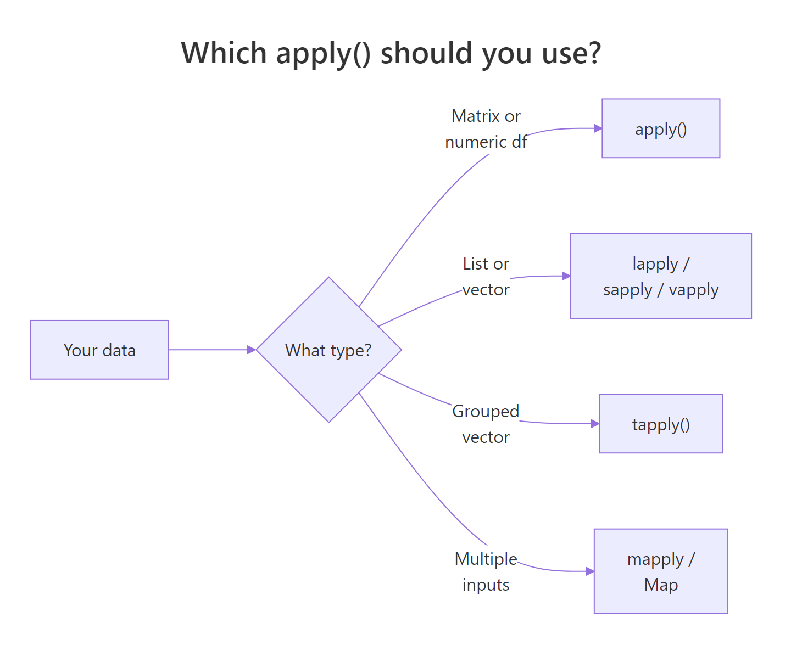

R apply() Error: 'argument is not a matrix' — Try These Alternatives
The message argument is not a matrix (and its modern cousin 'X' must have at least 2 dimensions) means you handed apply() something it can't treat as a rectangular, single-type grid — usually a data frame with mixed columns, a list, or a plain vector. The fix is to pick the right tool: convert the structure honestly, or switch to lapply(), sapply(), vapply(), or dplyr::across().
Why does apply() throw "argument is not a matrix"?
apply() is a matrix function wearing a friendly face. Internally it calls as.matrix() on your input and demands a rectangular, single-type grid. A vector has no rows and columns, a list has no shape at all, and a mixed data frame forces every number to become a character. Any of these trips the error. The fastest way to see the fix is to watch it happen.
The first call fails because as.matrix() promoted the student column (character) and dragged every number along with it — mean() on character data returns NA. The second call selects only the numeric columns first, so the matrix is genuinely numeric and the row means come out as expected. That one move — "pick numeric columns before you convert" — fixes ninety percent of real-world cases.
apply() surprises you, the explanation is that R was forced to pick one type for the whole rectangle — and the type it picked wasn't the one you wanted.Try it: Using the built-in iris dataset, compute the row-wise sum of its four numeric columns (columns 1 through 4) with apply(). Store the result in ex_row_sums and print the first six values.
Click to reveal solution
Explanation: iris[, 1:4] drops the Species factor column, leaving a purely numeric frame. as.matrix() then produces a clean numeric matrix, and apply(..., 1, sum) sums across rows.
How do you convert a data frame correctly?
The error is almost always a conversion error, not an apply() error. Your job is to hand apply() a numeric matrix — which means picking the numeric columns explicitly, then coercing. Let's see the silent failure mode up close, because no error is thrown and the wrong answer ships to production.
Two things are worth noticing. First, typeof(bad) is "character" — no warning, no error, just numbers secretly turned into text. Second, the sapply(iris, is.numeric) trick returns a logical vector the same length as the number of columns, which you can use to filter. From there, apply(iris_num, 2, mean) walks across columns (MARGIN = 2) and returns the four feature means. This pattern — df[, sapply(df, is.numeric)] — is the single most useful defensive move in the apply ecosystem.
as.matrix() promotes the whole matrix to character, and numeric functions return NA with only a warning. Always filter to numeric columns before matrix coercion.Try it: The airquality dataset has numeric and integer columns plus some NAs. Compute the column means for every numeric column, ignoring NAs. Save the result to ex_aq_means.
Click to reveal solution
Explanation: Every column in airquality is already numeric, so the sapply(..., is.numeric) filter is a no-op here — but it makes the code robust to future columns. na.rm = TRUE is passed through apply() to mean().
When should you use lapply, sapply, or vapply instead?
Some structures have no rows and columns at all — lists in particular. apply() can't help them, and trying is the most common cause of the raw "argument is not a matrix" phrasing. The list family (lapply, sapply, vapply) exists specifically for this case.

Figure 1: Choosing between apply(), lapply()/sapply()/vapply(), tapply(), and mapply() based on your data's shape.
sapply() is the lazy-friendly choice: it returns whatever shape is most natural — a vector if each call returns one value, a matrix if each returns the same-length vector. That flexibility is also its weakness, because a single weird element can silently change the return type. vapply() asks you to commit: "I promise each call returns a length-one numeric." If one doesn't, it errors immediately, which is exactly what you want in production code.
numeric(1) or character(1) — costs you a few keystrokes and buys you a loud error the moment the data changes shape.Try it: Given a list of three numeric vectors ex_list <- list(a = 1:5, b = 6:10, c = 11:15), compute the sum of each element and return a named numeric vector. Save it to ex_sums.
Click to reveal solution
Explanation: sapply() walks each list element, calls sum(), and simplifies the list of one-element results into a named numeric vector. vapply(ex_list, sum, integer(1)) would work identically while declaring the return type.
How do you do this the tidyverse way with dplyr::across()?
If your workflow already lives in dplyr, across() is the modern, readable alternative to apply() for column-wise operations. It picks columns with tidyselect helpers like where(is.numeric) — no manual filter step needed.
Three things are worth calling out. where(is.numeric) is a tidyselect helper that scans the incoming data and keeps only columns matching the predicate, so character columns like name and hair_color are transparently dropped. across() then applies mean() to each survivor. And because across() lives inside summarise(), the result is a tidy one-row tibble — the same shape you'd get for any other aggregation — which plugs straight into downstream joins, plots, and writes.
mutate_if() / summarise_at() variants with across(). If you see tutorials using summarise_if(is.numeric, mean), the modern rewrite is summarise(across(where(is.numeric), mean)). Check your dplyr version with packageVersion("dplyr").Try it: Use across() with summarise() to compute the median of every numeric column in the built-in mtcars data frame. Save the result to ex_mtcars_medians.
Click to reveal solution
Explanation: Every mtcars column is already numeric, so where(is.numeric) selects them all. across() then applies median to each, and summarise() collapses the eleven results into a one-row tibble.
How do you prevent the error in the first place?
Most errors are preventable with three small habits: check shapes before you convert, preserve rectangular structure when subsetting, and prefer specialised functions when they exist. Here's all three in a single demo.
Each line earns its keep. stopifnot() turns a silent misuse ("I passed a vector") into a clear, early error. The drop = FALSE argument to [ stops R from silently collapsing a one-column data frame into a vector — the single most common way users lose dimensionality and then hit the error. And colMeans(), rowMeans(), colSums(), rowSums() are implemented in C: for the exact operations they cover, they are 5–50x faster than the equivalent apply() call. Reach for them first, and fall back to apply() only when you need a custom function.
colMeans() / rowMeans() / colSums() / rowSums() over apply() when you can. They're implemented in C, run much faster, and sidestep the entire "is this a matrix?" question because they enforce numeric input themselves.Try it: Write a function ex_col_mins(df) that returns the minimum of every numeric column in df as a named numeric vector. Use a stopifnot() guard to refuse non-data-frame input. Test it on mtcars.
Click to reveal solution
Explanation: The guard rejects anything that isn't a data frame up front. The numeric-column filter handles mixed-type frames, and drop = FALSE preserves the data-frame shape even if only one numeric column survives. apply(..., 2, min) walks columns and returns the per-column minimum.
Practice Exercises
Exercise 1: Row-wise means on airquality with missing values
airquality has six numeric columns — Ozone, Solar.R, Wind, Temp, Month, Day — and scattered NAs in the first two. Compute a numeric vector of row means across all six columns, handling NAs. Save the result to aq_row_means and show the first six values.
Click to reveal solution
Explanation: Every column in airquality is numeric, so direct as.matrix() coercion is safe. apply(..., 1, mean, na.rm = TRUE) walks rows and passes na.rm = TRUE through to mean(), so rows with a missing Ozone or Solar.R still produce a finite mean from their remaining values.
Exercise 2: Summary stats on a ragged list
You have a list of numeric vectors of different lengths. Compute the mean and standard deviation of each element and return a data frame with columns name, mean, sd. Save it to ragged_summary.
Click to reveal solution
Explanation: The list has uneven element lengths, so it can never be coerced to a rectangular matrix — apply() is off the table. sapply() walks the list twice (once for mean, once for sd), returning a named numeric vector each time. Those two vectors plus the element names become the three columns of the summary data frame. row.names = NULL stops R from reusing the list names as row names.
Complete Example
Putting every approach side by side on a small sales-by-region data set.
All three return the same numbers, but they communicate different intents. Approach A is the explicit fix — useful when you want to see every step and debug a stubborn error. Approach B is the readable pipeline — the right choice inside a tidyverse workflow. Approach C is the performance shortcut — reach for it when your job is one of the four built-in row/column reductions. There is no single winner; the mental model is "match the tool to the shape and to the function."
Summary
| Situation | Use this | Why |
|---|---|---|
| Rectangular, all-numeric data | apply() or rowMeans() / colMeans() |
Matrix-shaped input, single type |
| Mixed-type data frame | Select numeric cols first, then apply() |
Avoids silent character coercion |
| List (even or uneven lengths) | lapply(), sapply(), vapply() |
Lists don't have dimensions |
| dplyr workflow | summarise(across(where(is.numeric), f)) |
Readable, tidyselect-aware |
| Row/column sums or means | rowSums() / colSums() / rowMeans() / colMeans() |
Implemented in C, much faster |
| Custom function per row/col | apply() on a numeric matrix |
Only apply() takes a user function with MARGIN |
References
- R Core Team —
?applyhelp page. Official documentation for the apply family. Link - Wickham, H. — Advanced R, 2nd Edition. Chapter 9: Functionals. Link
- dplyr reference —
across(). Link - R Core Team — An Introduction to R, Section 5: Arrays and Matrices. Link
- R Core Team —
?vapplyhelp page, on type-safe list iteration. Link
Continue Learning
- R Common Errors — the full reference of 50 R errors, with plain-English fixes for each.
- Functional Programming in R — how
map(),reduce(), and purrr sit on top of the apply family. - dplyr across() — the modern, tidyselect-aware replacement for column-wise
apply().